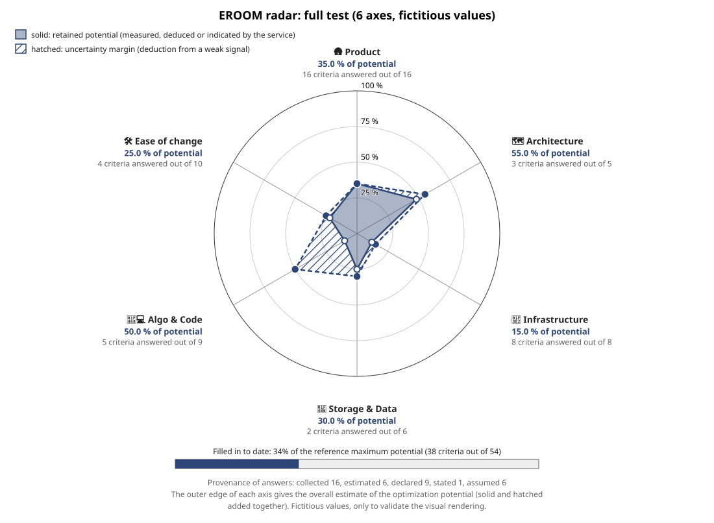
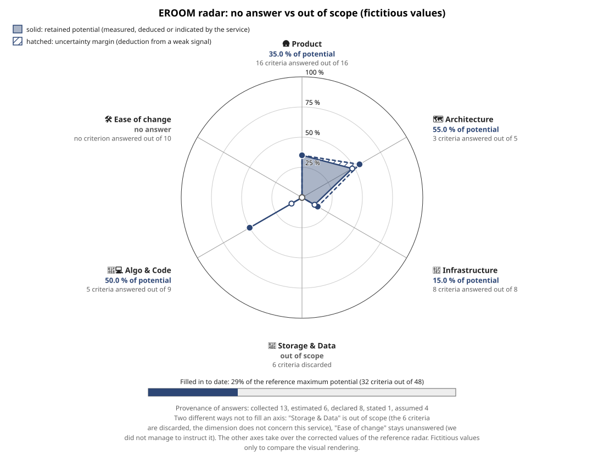

Compared to the reference radar, two axes were emptied here, each according to a different case: "Storage & Data" (30% in the reference) becomes out of scope (we know it does not concern this service), and "Ease of change" (25% in the reference) becomes unanswered (we did not manage to instruct it). Both axes are empty (pinched at the center), but the radar displays a different label under each.

Finding for the decision to take on job 22: the radar already distinguishes the two notions through the text under the axis ("no answer" vs "out of scope"), but not through a different color or shape — a hurried reader who only looks at the figure can confuse them visually. Keep that in mind if you want to push the distinction further than the text.